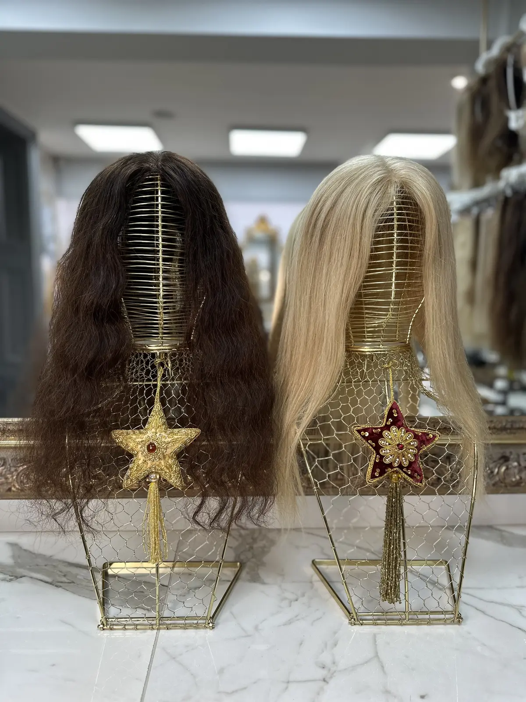
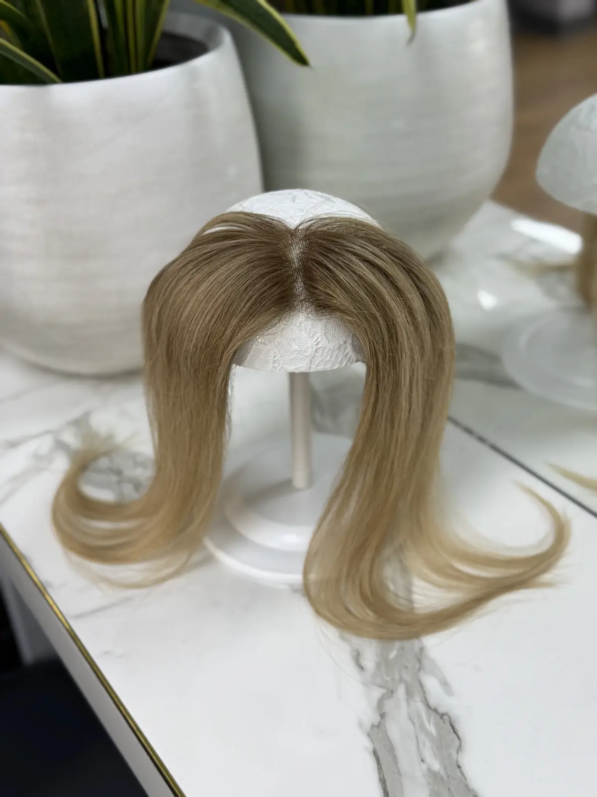
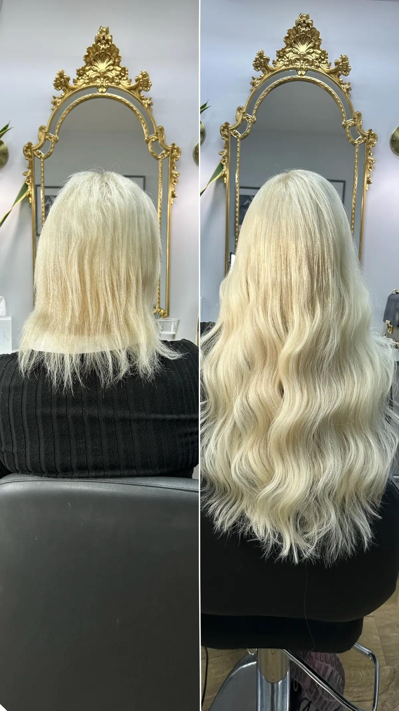
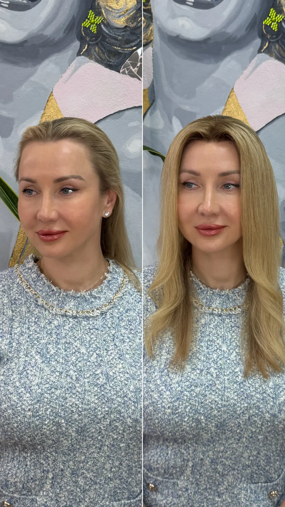
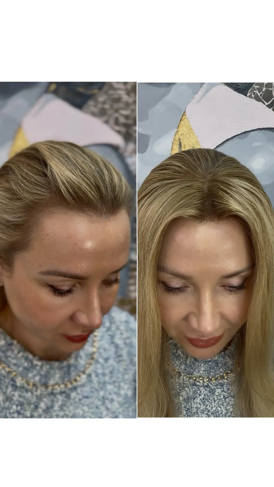

Hair Loss Solutions for Women
Feel like yourself again.
For every stage of hair loss
You have already noticed the thinning, and you have already been brave enough to look for an answer. This page is that answer, quietly, beautifully and without surgery, from a team that has fitted hair toppers and medical wigs for women for 20 years.
Two answers to hair loss
Topper or Medical Wig, Which Is Right?
The right one depends on how much healthy hair remains.

A Topper, When Thinning Shows on Top
A topper is a made to measure piece that covers the crown and the parting, the places where thinning shows first. It clips securely into the healthy hair around it, adds density exactly where it is needed and blends into your own length so completely that nobody sees where it begins. If you still have good coverage at the sides and back, a hair topper is usually the answer.

A Medical Wig, When You Need It All
A medical wig replaces the full head of hair. Ours are hand tied from Russian hair on soft, fully laced bases designed for sensitive scalps, whether loss is advanced, total or expected soon. Many clients order before treatment begins so their new hair is ready the moment it is needed. If thinning is extensive or the scalp needs complete coverage, a medical wig is the answer.
Not sure which you need? That is exactly what the consultation is for. You will leave knowing your options, your price and your timeline, with no obligation to go further.

Made for one woman only
Russian Hair Toppers for Thinning Hair
Every topper is made for one woman only. We measure the exact area you want to cover, select Russian hair to echo the depth and natural variation of your own colour and build the base around your parting, your crown and the way you actually wear your hair. Classic, Frontal and Halo designs answer different patterns of thinning, and smaller wiglets cover smaller areas.
The realism comes from restraint. The hair is never dyed, so it keeps the softness and shine that colour processing destroys. Shades are blended strand by strand until the piece disappears into your own hair in every light, indoors and out. Silk and mono bases recreate the look of scalp at the parting, so even at close range, even at the mirror, there is nothing to see.
A topper clips in and out in seconds, stays secure through a full working day and comes off at night like jewellery. Your remaining hair keeps breathing underneath it, nothing is glued and nothing is permanent. Hair toppers start from £615, made to measure Classic designs from £1,050 and Halo designs from £1,100, each crafted for you over 8 to 12 weeks.

Hand tied, fully laced
Medical Wigs Made to Measure
A medical wig from Tatiana Karelina is not a wig in the way most people imagine one. Each is hand tied strand by strand from unprocessed Russian hair on a soft, fully laced base, so the hair moves, parts and catches the light exactly as if it grew from your own scalp. Nothing about it reads as a wig, not the hairline, not the parting, not the movement.
Most of our medical wig clients are facing chemotherapy, alopecia or another sudden loss, and the process is built around that reality. We can photograph and match your natural colour before it changes, fit around your treatment calendar and have your wig ready for the moment you want it. Every fitting is private, unhurried and led entirely by you.
Made to measure wigs start from £2,600 and are crafted over 8 to 12 weeks, with a 50% deposit to begin and the balance on completion. The consultation and your exact quotation always come first, so there are never surprises, and our full price list is published for every piece we make.
Real clients, photographed with permission
Real Clients, Real Transformations
Every photograph below is a real client of the salon, photographed on the day of her fitting. No filters and no studio lighting, just the difference a made to measure piece makes.




What to expect
Your Journey, Consultation to Fitting
- ConsultationIn London, in Manchester or by video, wherever you are in the world.
- DesignMeasurements, base choice and the exact coverage agreed together.
- ColourRussian hair selected and blended to your natural shade, never dyed.
- CraftingYour piece is hand made for you over 8 to 12 weeks.
- FittingCut, styled and blended to you, in the salon or guided by video.
- AftercareStyling guidance and ongoing support for the life of your piece.
From our Google reviews
What Women Say About Their New Hair
Placeholder review. A real 5 star Google review about everyday confidence with a topper will go here, in the reviewer's own words.
To Confirm
Placeholder review. The real Google review from a client fitted during chemotherapy will go here, in her own words.
To Confirm
Placeholder review. A real 5 star Google review about a medical wig fitting will go here, in the reviewer's own words.
To Confirm
Everything you want to know
Frequently Asked Questions
Do I need a diagnosis before I book?
No. We are not doctors and you do not need a referral. We provide cosmetic solutions for hair loss of any cause. For medical advice about the cause itself, we always recommend a GP or dermatologist.
How do I know whether I need a topper or a wig?
As a guide, thinning on top with healthy sides and back suits a topper, while extensive or total loss suits a wig. The consultation confirms it in minutes, honestly and without obligation.
What do toppers and medical wigs cost?
Hair toppers start from £615, made to measure Classic toppers from £1,050, Halo toppers from £1,100 and made to measure wigs from £2,600. Your exact quotation is confirmed at consultation before you commit.
How long does a made to measure piece take?
Allow 8 to 12 weeks from confirming your design, with a 50% deposit to begin and the balance on completion. The time goes into hair selection, colour blending and building the base by hand.
Can I order before chemotherapy starts?
Yes, and many clients do. Ordering early lets us match your natural colour exactly and have your wig ready before treatment changes anything. We fit around your treatment calendar throughout.
Will a topper damage the hair I still have?
No. A topper rests on small clips in the surrounding hair, with no glue, no tension and no permanent attachment. Your own hair continues its natural cycle underneath, completely undisturbed.
Can you really match my exact colour?
Yes. Because we never dye the hair, we match by blending naturally varied Russian hair shades until the piece mirrors the depth, tone and highlights of your own colour in every light.
What if I cannot get to London or Manchester?
We fit clients across the UK and worldwide by video consultation. Measurements, colour matching and design all work remotely, and your finished piece is delivered and fitted with video guidance.
Take the First Step Back to Yourself
Book a private consultation in London, Manchester or by video, wherever you are in the world. No pressure and no obligation, just honest answers about your hair and what is possible.
Book Consultation